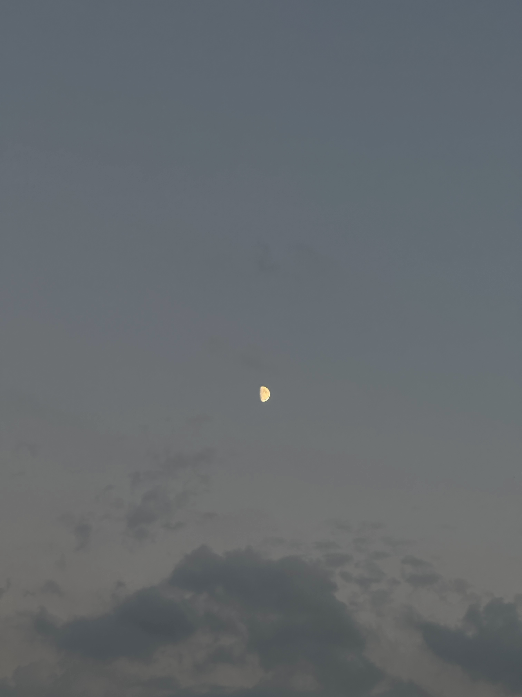

Moon Phases I Saw This September

A Half Moon-
Also referred to as the "First-Quarter" moon.
A bit of history...
The moon is illuminated by light from the sun. As the moon moves around Earth,
the amount of illumination it receives from the sun changes, creating the lunar phases.
The complete cycle of phases, lasts approximately 29.5 days, known as a lunar month.
There are eight primary phases of the Moon:
New Moon
Waxing Crescent
First Quarter:
This lunar phase is symbolic of growth, progession, and renewal.
It is known to be a time for meditation, ritual, setting intentions,
or as a reminder to start taking steps toward one's goals and dreams.
Waxing Gibbous
Full Moon
Waning Gibbous
Third Quarter
Waning Crescent
Focus:
These next couple of weeks, I intend on documenting each moon phase I see in that retrospective given week.
My goal is to do research regarding the significance, historical context, and spiritual connotations
associated with each lunar phase. My fascination with the moon has motivated me to seek a deeper understanding.
If you share this curiosity and often find yourself capturing the moon through photographs but wish to
expand your knowledge, I invite you to join me on this 10-week exploration!"